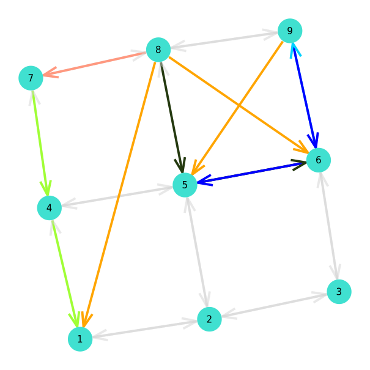
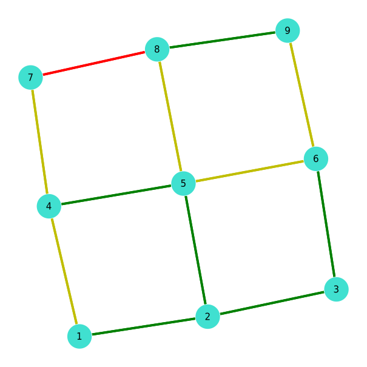
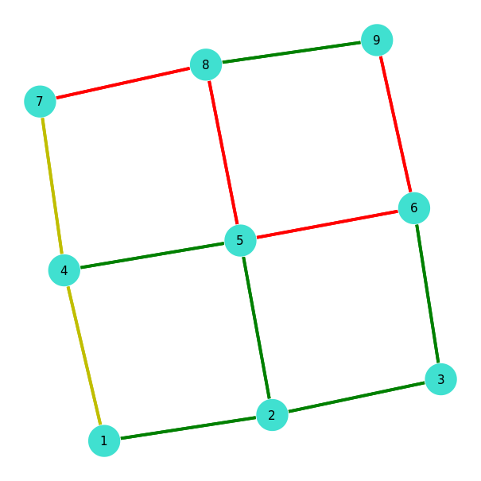
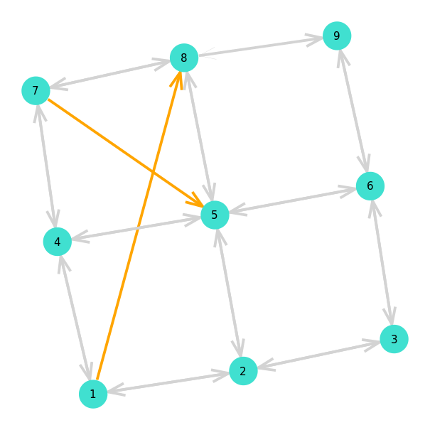
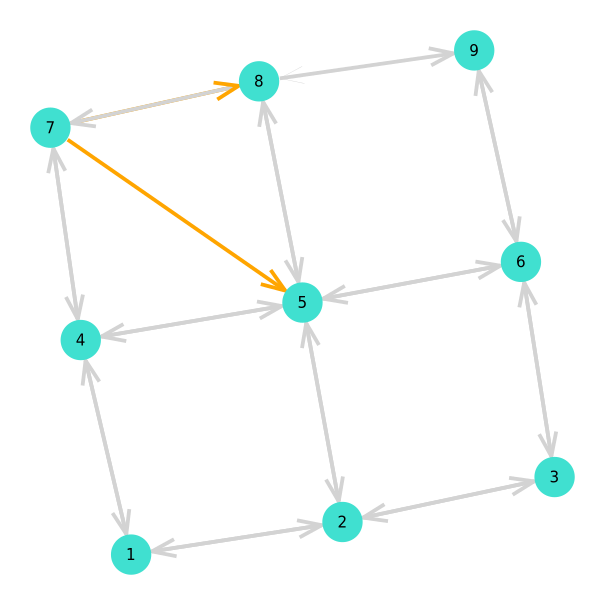
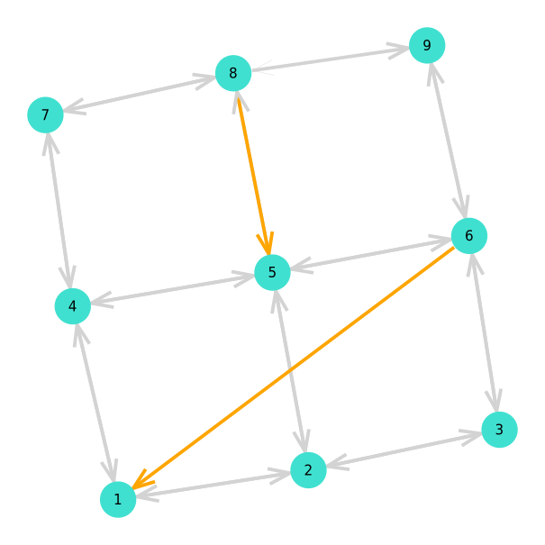

Instance generation
Functions and routines for creating new instances by applying perturbations to a reference problem. These functions are used for creating training and testing sets for training Sparsifying models.
Index
MultiFlows.generate_exampleMultiFlows.make_datasetMultiFlows.non_saturated_path_existsMultiFlows.random_demand_amountsMultiFlows.random_demand_endpointsMultiFlows.saturateMultiFlows.shake
Full docs
MultiFlows.generate_example — Methodgenerate_example(pb::MCF;
demand_p::Float64=.05,
amount_factor::Float64=1.05,
nK::Int64=nk(pb),
origins_destinations::Tuple{AbstractVector{T},AbstractVector{T}}=demand_endpoints(pb),
sample_f::Function=Base.rand,
solve_f::Function=solve_column_generation,
demand_order_f::Function=identity,
amount_delta_f::Function=identity
)Generate an example based on instance pb. Returns an instance that is the results of applying shake, saturate and then increasing the amount of a randomly chosen set of demands by multiplying its amount by amout_factor.
Example
julia> pb = MCF(grid((3,2)), ones(7), ones(7), [Demand(1,2,1.)]);
julia> generate_example(pb)
MCF(nv = 6, ne = 14, nk = 1)
Demand{Int64, Float64}(1, 2, 1.05)
julia> # change the number of demands
julia> generate_example(pb, nK=10)
MCF(nv = 6, ne = 14, nk = 10)
Demand{Int64, Float64}(1, 2, 1.0)
Demand{Int64, Float64}(1, 2, 1.05)
Demand{Int64, Float64}(1, 2, 1.0)
Demand{Int64, Float64}(1, 2, 1.0)
Demand{Int64, Float64}(1, 2, 1.0)
Demand{Int64, Float64}(1, 2, 1.0)
Demand{Int64, Float64}(1, 2, 1.0)
Demand{Int64, Float64}(1, 2, 1.0)
Demand{Int64, Float64}(1, 2, 1.0)
Demand{Int64, Float64}(1, 2, 1.0)
MultiFlows.make_dataset — Methodmake_dataset(pb::MCF, n::Int64, path::String)Create a dataset by applying perturbations to a reference instance. Saves resulting instance and solution files to path directory.
MultiFlows.non_saturated_path_exists — Methodnon_saturated_path_exists(sol::MCFSolution, pb::MCF; tol::Float64=1e-8)Check if the solution contains a path with capacity greater than the amount of flow circulating on it.
Example
julia> pb = MCF(grid((3,2)), ones(7), ones(7), [Demand(1,2,1.)]);
julia> sol,_ = solve_column_generation(pb);
julia> sol
MCFSolution
Demand k = 1
1.0 on VertexPath{Int64}([1, 2])
julia> non_saturated_path_exists(sol, pb)
false
julia> sol.flows[1][1] = .5
0.5
julia> non_saturated_path_exists(sol, pb)
true
MultiFlows.random_demand_amounts — Methodrandom_demand_amounts(pb::MCF, n::Int64=nk(pb); factor::Float64=1.)Select n demand amounts randomly by sampling values from $\{ b_k \}_{k\in K}$.
Example
julia> unique(demand_amounts(pb))
4-element Vector{Float64}:
500.0
50.0
1000.0
100.0
julia> new_amounts = random_demand_amounts(pb, 100);
julia> unique(new_amounts)
4-element Vector{Float64}:
500.0
1000.0
100.0
50.0
The factor arguments lets one apply a scaling to the amounts :
julia> new_amounts = random_demand_amounts(pb, 100, factor=2.0);
julia> unique(new_amounts)
4-element Vector{Float64}:
2000.0
100.0
200.0
1000.0
MultiFlows.random_demand_endpoints — Methodrandom_demand_endpoints(pb::MCF{T,N}, n::Int64=nk(pb);
origins_destinations::Tuple{Vector{Int64}, Vector{Int64}}=demand_endpoints(pb),
sample_f::Function=Base.rand,
) where {T,N}Sample new demand endpoints $s_k, t_k$ randomly from $\{ s_k, t_k \}_{k\in K}$. The set of origins and destinations from which new endpoints are sampled can be changed by passing a value to the origins_destinations arguments. Similarly sample_f is a sampling function, the default value samples new endpoints uniformly at random.
Example
julia> random_demand_endpoints(pb, 5)
([29, 57, 21, 47, 64], [20, 9, 63, 54, 57])
julia> random_demand_endpoints(pb, 5, origins_destinations=(1:nv(pb), 1:nv(pb)))
([35, 55, 3, 31, 24], [7, 47, 38, 44, 20])
MultiFlows.saturate — Methodsaturate(pb::MCF{T,N};
tol::Float64=1e-8,
max_iter::Int64=10,
solve_f::Function=solve_column_generation,
demand_order_f::Function=identity,
amount_delta_f::Function=identity
) where {T,N}Saturate an MCF instance. Increase the amount of each demand until reaching the maximum capacity of the paths used to route them. pb is solved by calls to solve_f until the returned solution does not contain a path with zero minimum available capacity. The maximum number of times the solver is called is max_iter. Default behaviour is to take the demands in their original order and increase the amount by $\min\limits_{a \in p_k} \text{available_capacity}(a)$, changing the demand_order_f, amount_delta_f functions lets users modify this scheme. Setting demand_order_f=shuffle will randomize the order in which the demands are increased, and amount_delta_f=ak->rand()*ak will increase the amount of demand k by a random number sampled from $\mathcal{U}([0, a_k])$ where $a_k$ is the available capacity on the path.
This function return a Tuple{MCF, MCFSolution} object.
julia> pb
MCF(nv = 9, ne = 24, nk = 5)
Demand{Int64, Float64}(9, 5, 0.5)
Demand{Int64, Float64}(8, 1, 0.5)
Demand{Int64, Float64}(8, 6, 0.5)
Demand{Int64, Float64}(8, 7, 0.5)
Demand{Int64, Float64}(6, 9, 0.5)
julia> pb_sat, sol_sat = saturate(pb);
julia> pb_sat
MCF(nv = 9, ne = 24, nk = 5)
Demand{Int64, Float64}(9, 5, 1.0)
Demand{Int64, Float64}(8, 1, 0.5)
Demand{Int64, Float64}(8, 6, 1.0)
Demand{Int64, Float64}(8, 7, 0.5)
Demand{Int64, Float64}(6, 9, 1.0)sol | sol available capacities | sol_sat available capacities |
|---|---|---|
|  |  |  |
julia> sol,_ = solve_column_generation(pb);
julia> sol_sat,_ = solve_column_generation(pb_sat);
julia> non_saturated_path_exists(sol, pb)
true
julia> non_saturated_path_exists(sol_sat, pb_sat)
falseMultiFlows.shake — Methodshake_instance(pb::MCF{T,N};
nK::Int64=nk(pb),
amount_factor::Float64=1.,
origins_destinations::Tuple{AbstractVector{T}, AbstractVector{T}}=demand_endpoints(pb),
sample_f::Function=Base.rand,
) where {T,N}Apply demand amount and endpoint perturbation to an MCF instance.
Example
julia> pb = MCF(grid((3,3)), ones(12), ones(12), [Demand(1,8,1.), Demand(7,5,.5)]);
julia> shake(pb)
MCF(nv = 9, ne = 24, nk = 2)
Demand{Int64, Float64}(7, 8, 0.5)
Demand{Int64, Float64}(7, 5, 0.5)
julia> shake(pb, origins_destinations=(1:nv(pb),1:nv(pb)))
MCF(nv = 9, ne = 24, nk = 2)
Demand{Int64, Float64}(8, 5, 0.5)
Demand{Int64, Float64}(6, 1, 0.5)
pb | pb1 | pb2 |
|---|---|---|
|  |  |  |